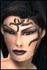

| Author | Thread |
Cudus
Phear Leet
 Registered: Mar 2002
Posts: 146 | Remove the trader profession It is pretty obvious the majority of the playerbase would be happy if they never had to fight a trader again. |
Kinkstaah
unimpressed by your post
 Registered: Jun 2001
Posts: 909 | Bump
(  ) |
Brueskie
Supa Leet
 Registered: Jan 2002
Posts: 183 | Speaking as a NT, no I don't wanna fight Traders or Docs. MPs I try and avoid, but they can be killed if I luck out and resist their NSD.
Sorry, debuffs are overpowered in PvP... so it's no suprise that a lot of people avoid fighting debuffing professions if possible.
Your wrangles are pretty neat, though.  |
Coldstrike
Supa Leet
 Registered: Nov 2001
Posts: 729 | Best idea I have seen in a long time.
*bump* |
Chlamydia
Soleet
 Registered: May 2002
Posts: 89 | ****
a nerf thread, in all its shame. Ya realize that FC never nerfs anything right, and winds up screwing all the wrong people.
Look at the 50% crit nerf for gods sake.
My advice, shut up about any more nerfs and come up with a sensable balance idea, then start advocating THAT, just yelling "nerf this!" is going to fsck us all, for sure. |
Brueskie
Supa Leet
Registered: Jan 2002
Posts: 183 | quote:
Originally posted by Helsinki
****
a nerf thread, in all its shame. Ya realize that FC never nerfs anything right, and winds up screwing all the wrong people.
Look at the 50% crit nerf for gods sake.
My advice, shut up about any more nerfs and come up with a sensable balance idea, then start advocating THAT, just yelling "nerf this!" is going to fsck us all, for sure.
Well, seeing as how the orignial poster is a trader, I believe his post was in the spirit of sarcasim. |
Cudus
Phear Leet
Registered: Mar 2002
Posts: 146 | It is not _all_ sarcasm. I think it would make a lot of people happy, including some traders who are sick of hearing everyone whine.
Let us keep our levels, creds, tokens and gear, and let us choose a new profession/breed/gender. Then delete the profession.
(I think Mercatura came up with this idea first btw, hope you don't mind) |
Mercatura
Supa Leet
 Registered: Apr 2002
Posts: 864 |  No sarcasm here either No sarcasm here eitherThis trader would settle for a reroll w/ levels & tokens.
Go ahead and delete the class. |
THEDEACON!
Supa Leet
 Registered: Feb 2002
Posts: 1184 | A nerf is coming for Traders, there's just too many complaints. Problem is, Traders don't have a real nemesis. As an MP I've given traders a big run for their money in the past, half out of luck. I juice up my nanoskills as high as they possibly go by casting all expertises on myself, all mochams and odin's missing eye. I get the first debuff off and the trader is NOT going to beat me under normal circumstances. Even with one divest on me I can still cast everything in my toolset.
But that's a BIG 'if'. Risky and more than half the time it won't work.
Docs can do the ol' init debuff, but if the trader is quick about it, he's already started casting his debuffs on the doc so the doc can't heal.
Traders need a nemesis and it seems fair that the nemesis should either be the martial artist and/or the metaphysicist.
MAs get this cool new attack based on riposte that allows them to potentially reverse a root or snare back on the attacker. Why not skills debuffs too? Have it work on MP and trader debuffs as well (seeing as how the MA is already the MP's nemesis).
The MP is also a natural choice for trader nemesis, as their whole pvp tactic is to turn off or reduce their opponent's nanoskills. Nanoshutdown is a no go, as it's too slow and we lose too much life if we have to try a second time. NS is a godawfully powerful debuff, so I see why it has a 160% nanoresist. Lower that and we go back to the lovely days when nanoresist was broken and I'd eat nearly every profession alive (ooooh those were good days, but not exactly fair to 10 of the 11 other professions out there). Maybe some sort of nano reflection shield for MPs??? Base it on nano resist and give it a chance to reflect any debuff back onto the attacker.
Not really overpowering if you think about it. We're weak against direct damage (being hit by bullets, fists, pretty much anything), so we have to be strong against SOMEthing. MPs are supposed to be the masters of boosting nanoskills and lowering nanoskills, so it would make sense that we should decide what goes into our own ncu.
Certain classes are still weak against MPs, namely doctors, Grid armor fixers and NTs. We're kinda on equal footing when pitted against a trader, all depends on who debuffs who first and out of any class, MPs have the best chance of surviving a divest (our nanoskills are sickly high and our attack rating sucks anyway).
Dont nerf traders, it's only going to make the same problems that the MAs (my other main profession) are having. Instead, give them a nemesis.
And btw (im going to get flamed for this), be careful how strong you make the NT fixer killer nukes...don't make them TOO good...
Fixers aren't as rock solid as everyone thinks and to honest, I'd be terrified to run out on the battlefield in grid armor, knowing that armor and all the protection is provides can be 'shut off' pretty easily. Being blue makes you an EASY target for traders, Docs, MPs and NTs already as it is and the little blue guys are the first ones I target when I play a high lvl NT (even without the fixer killer nukes) or MP...When my trader gets to the appropriate level, I'll be fixer hunting with him as well. Rock, scissors, paper. Lots of classes can own a GA fixer. That's not what I'd call overpowered by a longshot. You just have to think in terms of mass pvp battles and NOT 1 on 1 arena fighting. |
cold
Supa Leet
 Registered: Nov 2001
Posts: 908 | /me forces your NCU to run Deprive Skills (Major) |
Akies
Leetas
 Registered: Feb 2002
Posts: 13 | DELETE TRADER CLASS! |
Zhagra
Eleet
 Registered: Feb 2002
Posts: 17 | lol this is just to funny not to do  |
gozzo
Old
 Registered: May 2002
Posts: 37 | Re: No sarcasm here either quote:
Originally posted by Mercatura
This trader would settle for a reroll w/ levels & tokens.
Go ahead and delete the class.
Add engies to that list........... |
Paffy
Supa Leet
 Registered: Nov 2001
Posts: 241 | I once suggested this myself as Agent except I suggested they remove Agent profession and let me retain my stuff/exp and choose another profession.
Now the whining about Agents having "all" has been subsided somewhat and I still think that Agents remain the most nerfed profession of them all and will retain that title even after you make some new nerfes to everyone else.
I still dont understand what people whined about Agents being able to cast all. That is what reads in their description. If you have so much problem with that, why didnt _you_ take Agent then?
Zarch and da chars including Agent and oh yeah, a Trader too
PS. If you cant win them, join them. Eight char slots and all... |
Knightwulf
Soleet
 Registered: Mar 2002
Posts: 47 | Oh HELL yes.. Delete the Trader profession and just place a couple Wrangle terminals in each of the major cities... No more waiting for drains, no more worrying about what side of the bed that Trader woke up on and whether they're going to charge ye a mil for that 72 Wrangle or hit you with a 131 as you walk by.
</sarcasm>
...and since FunCom is all about PVP at the cost of completely destroying PVM and the primary complaint about Traders is in PVP, I can actually see this happening..
PVPTwink: Ahh! Traders actually have a chance at killing me! Get rid of them!
FunCom: Oh no! Traders are much too powerful, we must remove them to make PVP fair. Quick! To the Bat Phone! Delete all Trader professions without warning and without recompensation... It's for the good of the community and the players will understand. |
Heroix
Leetas
 Registered: Mar 2002
Posts: 19 | well this post is just lame.. and i bet FC don't even notice this tread.. Atleast i hope not :P |
Real Kinky Ityn
Supa Leet
 Registered: Jul 2002
Posts: 347 | Yep, delete crats too. |
Mercatura
Supa Leet
Registered: Apr 2002
Posts: 864 | Engies can't go anywhere but up. (how long it takes to get there is a different story) Nobody complains about engies, except for a few crazy MAs that actually think <150 MA skill means anything without a 17% crit difference, among other things. FFoK change nailed that asylum door shut, nobody will ever hear from those crazies again.
Crats...well the people now working at funcom apparently don't have a g*****m clue about what crowd control is supposed to be, so they're on a guarenteed downhill curve in PvM at least. Forget about rooting, snaring, calming, charms etc...they're out of style with FC in the endgame. Naughty players are doing things besides damage and heals, can't have that 
Oh wait, here you go, you can "calm" in pvp, though its not really a calm, but a...um...we'll get back to you on that.
(BTW, "true" calms in pvp would get scream-nerfed into oblivion 50 times harder than NT stuns did, giving other players the power to basically unplug your keyboard at whim is a big nono in this kind of game. Its bad enough when certain lame (and grey) dungeon/unique mobs chain stun me for 10 minutes straight until I finally fall over.) |
Cudus
Phear Leet
Registered: Mar 2002
Posts: 146 | Somehow this thread got warped to the -social- forum? |
Vydas
Supa Leet
 Registered: Feb 2002
Posts: 459 | Hopefully some of those trader hate threads will follow . Generally, I don't question decisions made by moderators on these boards, but this one is actually funny, in a sick FC sort of way. |
All times are GMT.


 Last Thread Next Thread
Last Thread Next Thread 
 November 21st, 2002 04:21
November 21st, 2002 04:21